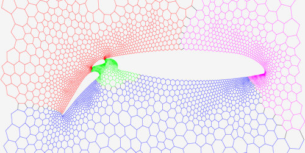

Overview
The graph partitioning problem asks for a division of a graph's node set into k equally sized blocks such that the number of edges that run between the blocks is minimized. An example graph that is partitioned into four blocks:
KaHIP - Karlsruhe High Quality Partitioning - is a family of graph partitioning programs. It includes KaFFPa (Karlsruhe Fast Flow Partitioner), which is a multilevel graph partitioning algorithm, in its variants Strong, Eco and Fast, KaFFPaE (KaFFPaEvolutionary) which is a parallel evolutionary algorithm that uses KaFFPa to provide combine and mutation operations, as well as KaBaPE which extends the evolutionary algorithm. Moreover, specialized techniques are included to partition road networks (Buffoon), to output a vertex separator from a given partition or techniques geared towards efficient partitioning of social networks.
Project Contributors: Yaroslav Akhremtsev, Roland Glantz, Henning Meyerhenke, Ilya Safro, Peter Sanders, Sebastian Schlag, Christian Schulz, Daniel Seemaier, Darren Strash, Jesper Larsson Träff
New in KaHIPv2.1:
- ParHIP (Parallel High Quality Partitioning): Our distributed memory parallel partitioning techniques designed to partition hierarchically structured networks such as web graphs or social networks.
- Mapping Algorithms: Our new algorithms to map the blocks onto processors to minimize overall communication time based on hierarchical partitionings of the task graph and fast local search algorithms.
- Edge Partitioning Algorithms: Our new algorithms to compute edge partitionings of graphs.
News:
2nd May 2020: Released mt-KaHIP which is a shared-memory parallel version of KaHIP due to Yaroslav Akhremtsev.
3rd January 2019: Released KaHIP v2.1 which now includes edge partitioning algorithms and 64bit edge support. Moreover, we switched to MIT licence.
1st March 2017: Released KaHIP v2.00 which now includes ParHIP, i.e. distributed memory parallel codes to partition hierarchically structured networks such as web graphs or social networks, and mapping algorithms that map task graphs (quotient graphs) onto processor graphs.
29th April 2016: Released KaHIP v1.00 which now includes improved codes for the node separator problem based on max-flow min-cut computations as well as locallized local search.
5th October 2015: Released KaHIP v0.73 which now includes an example program to link and call the library.
3rd January 2015: Included example wrapper to link the KaHIP library within Java projects.
22nd November 2014: We released KaHIP v0.7 which includes the possibility to balance edges among blocks and integrates our own max-flow min-cut implementations. Balancing edges among blocks is in particular important for graph processing frameworks or parallel matrix vector multiplications.
13rd June 2014: We added huge weighted max-flow min-cut instances from multilevel graph partitioning which may be used for benchmarking max-flow min-cut algorithms.
22nd April 2014: We released a technical report on parallel graph partitioning for complex networks. For example, we can obtain a high quality partition of uk-2007, which has 3.3 billion edges, in roughly 16 seconds. The report can be found here. The code will also be released within the project -- stay tuned!
22nd April 2014: We released a technical report on (semi-)external graph partitioning. The report can be found here.
3rd March 2014: We added huge max-flow min-cut instances created with our partitioning framework. The max-flow min-cut instances stem from the local search algorithms within KaFFPa that are used to improve a bipartition of the graph. They contain up to 2.6 billion edges and can be found in the miscellaneous section.
14th February 2014: Version 0.6 is out! We integrated improved algorithms for social networks and web graphs. The algorithms integrated are from the paper "Partitioning Complex Networks via Size-constrained Clustering" (see below).
For regular project updates follow us on Twitter.
Licence
The program is licenced under MIT licence.If you publish results using our algorithms, please acknowledge our work by quoting the following paper:
@inproceedings{DBLP:conf/wea/SandersS13,
author = {Peter Sanders and
Christian Schulz},
title = {Think Locally, Act Globally: Highly Balanced Graph Partitioning},
booktitle = {Experimental Algorithms, 12th International Symposium, {SEA} 2013,
Rome, Italy, June 5-7, 2013. Proceedings},
pages = {164--175},
year = {2013},
volume = {7933},
publisher = {Springer},
year = {2013}
}
If you use our parallel partitioner ParHIP please also cite the following paper (PDF):
@article{DBLP:journals/tpds/MeyerhenkeSS17,
author = {Henning Meyerhenke and
Peter Sanders and
Christian Schulz},
title = {Parallel Graph Partitioning for Complex Networks},
journal = {{IEEE} Trans. Parallel Distrib. Syst.},
volume = {28},
number = {9},
pages = {2625--2638},
year = {2017},
url = {https://doi.org/10.1109/TPDS.2017.2671868},
doi = {10.1109/TPDS.2017.2671868},
timestamp = {Fri, 27 Dec 2019 21:15:41 +0100},
biburl = {https://dblp.org/rec/journals/tpds/MeyerhenkeSS17.bib},
bibsource = {dblp computer science bibliography, https://dblp.org}
}
If you use mapping algorithm please also cite the following paper (PDF):
@inproceedings{DBLP:conf/wea/SchulzT17,
author = {Christian Schulz and
Jesper Larsson Tr{\"{a}}ff},
title = {Better Process Mapping and Sparse Quadratic Assignment},
booktitle = {16th International Symposium on Experimental Algorithms, {SEA}},
pages = {4:1--4:15},
year = {2017},
series = {LIPIcs},
volume = {75},
publisher = {Schloss Dagstuhl - Leibniz-Zentrum f{\"{u}}r Informatik},
crossref = {DBLP:conf/wea/2017},
url = {https://doi.org/10.4230/LIPIcs.SEA.2017.4},
doi = {10.4230/LIPIcs.SEA.2017.4},
timestamp = {Tue, 11 Feb 2020 15:52:14 +0100},
biburl = {https://dblp.org/rec/conf/wea/SchulzT17.bib},
bibsource = {dblp computer science bibliography, https://dblp.org}
}
If you use edge partitioning algorithms please also cite the following paper (PDF):
@inproceedings{DBLP:conf/alenex/Schlag0SS19,
author = {Sebastian Schlag and
Christian Schulz and
Daniel Seemaier and
Darren Strash},
title = {Scalable Edge Partitioning},
booktitle = {Proceedings of the Twenty-First Workshop on Algorithm Engineering and Experiments, {ALENEX}},
pages = {211--225},
publisher = {{SIAM}},
year = {2019},
doi = {10.1137/1.9781611975499.17}
}
If you use mt-KaHIP (shared-memory parallel version) please also cite the following paper (PDF):
@inproceedings{DBLP:conf/europar/Akhremtsev0018,
author = {Yaroslav Akhremtsev and
Peter Sanders and
Christian Schulz},
title = {High-Quality Shared-Memory Graph Partitioning},
booktitle = {24th International Conference on Parallel and Distributed Computing},
pages = {659--671},
year = {2018},
series = {Lecture Notes in Computer Science},
volume = {11014},
publisher = {Springer},
doi = {10.1007/978-3-319-96983-1\_47}
}
The algorithms that are included for download are mainly based on the following publications: - Peter Sanders and Christian Schulz. Engineering Multilevel Graph Partitioning Algorithms. In Proceedings of the 19th European Symposium on Algorithms (ESA'11), volume 6942 of LNCS, pages 469--480. Springer, 2011. Download PDF.
- Peter Sanders and Christian Schulz. Distributed Evolutionary Graph Partitioning. In Proceedings of the 12th Workshop on Algorithm Engineering and Experimentation (ALENEX'12), pages 16--19, 2012. Download PDF.
- Peter Sanders and Christian Schulz. High Quality Graph Partitioning. In Proceedings of the 10th DIMACS Implementation Challenge Workshop: Graph Partitioning and Graph Clustering, pages 1--17, AMS, 2013. Download PDF.
- Peter Sanders and Christian Schulz. Think Locally, Act Globally: Highly Balanced Graph Partitioning. In Proceedings of the 12th International Symposium on Experimental Algorithms (SEA'13), volume 7933 of LNCS, pages 164--175, 2013. Download PDF.
- Christian Schulz. High Quality Graph Partitioning. PhD thesis. Karlsruhe Institute of Technology, 2013.
ISBN 978-3844264623, epubli GmbH. Download PDF.
- Roland Glantz and Henning Meyerhenke and Christian Schulz. Tree-based Coarsening and Partitioning of Complex Networks. In Proceedings of the 13th Symposium on Experimental Algorithms (SEA’14), volume 8504 of Lecture Notes in Computer Science, pages 364--375. Springer, 2014. Download PDF.
- Henning Meyerhenke and Peter Sanders and Christian Schulz. Partitioning of Complex Networks via Size-constrained Clustering. In Proceedings of the 13th Symposium on Experimental Algorithms (SEA’14), volume 8504 of Lecture Notes in Computer Science, pages 351--363. Springer, 2014. Download PDF.
- Yaroslav Akhremtsev and Peter Sanders and Christian Schulz. (Semi-)External Algorithms for Graph Partitioning and Clustering. In Proceedings of the 15th Workshop on Algorithm Engineering and Experimentation (ALENEX'15), pages 33--43, 2015. Download PDF.
- Henning Meyerhenke and Peter Sanders and Christian Schulz. Parallel Graph Partitioning for Complex Networks. In 29th IEEE International Parallel and Distributed Processing Symposium (IPDPS'15), 2015. Download PDF.
- Peter Sanders and Christian Schulz. Advanced Multilevel Node Separator Algorithms. In Proceedings of the 15th International Symposium on Experimental Algorithms (SEA'13), 2016. Download PDF.
- Christian Schulz and Jepser Larsson Träff. Better Process Mapping and Sparse Quadratic Assignment. In Proceedings of the 15th International Symposium on Experimental Algorithms (SEA'17), 2017. Download PDF.
- Sebastian Schlag, Christian Schulz, Daniel Seemaier and Darren Strash. Scalable Edge Partitioning. Proceedings of the 12th Workshop on Algorithm Engineering and Experimentation (ALENEX'19), 2019. Download PDF.
- Yaroslav Akhremtsev, Peter Sanders and Christian Schulz. High-Quality Shared-Memory Graph Partitioning. In Proceedings of the 24th International European Conference on Parallel Computing (Euro-Par), volume 11014 of LNCS, pages 659--671, 2018. Download PDF
Download
- KaHIP_2.12.tar.gz (or available on GitHub here)
- User Guide to KaHIP v2.10
- Note: this release does NOT contain natural cuts due to an US software patent. If you want to use specialized techniques for road networks, e.g. Buffoon, please send us an email.
- Shared-memory parallel version Mt-KaHIP (due to Yaroslav Akhremtsev): mt-KaHIP.tar.gz

Support
- Write us an email if you need support!
- We are glad for any comments and error reports (or even bug fixes or feature requests) that you send us.
- Graphs used in our papers will be provided to you on request!
Miscellaneous
- Large flow networks used to improve a given bipartition of the graph which contain up to 2.6 billion edges:
- Based on Delaunay Graphs: del_flow_networks.tar.gz (11GB)
- Based on Grid Graphs: grid_flow_networks.tar.gz (22GB)
- Based on Random Geometric Graphs: rgg_flow_networks.tar.gz (6.8GB)
- Based on Other Graphs (Road Networks, Scientific Computing, ...): other_flow_networks.tar.gz (1.7GB)
- Weigthed Flow Networks From Multilevel Graph Partitioning based on Various Graphs weighted_flownetworks.tar.gz (16GB)